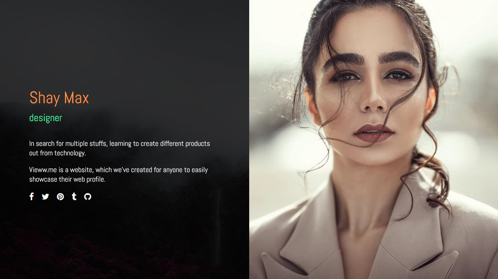
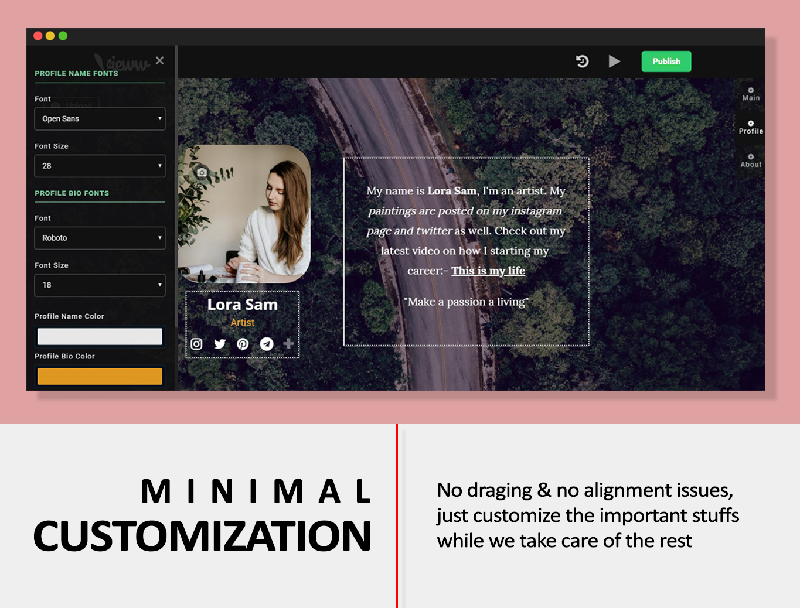
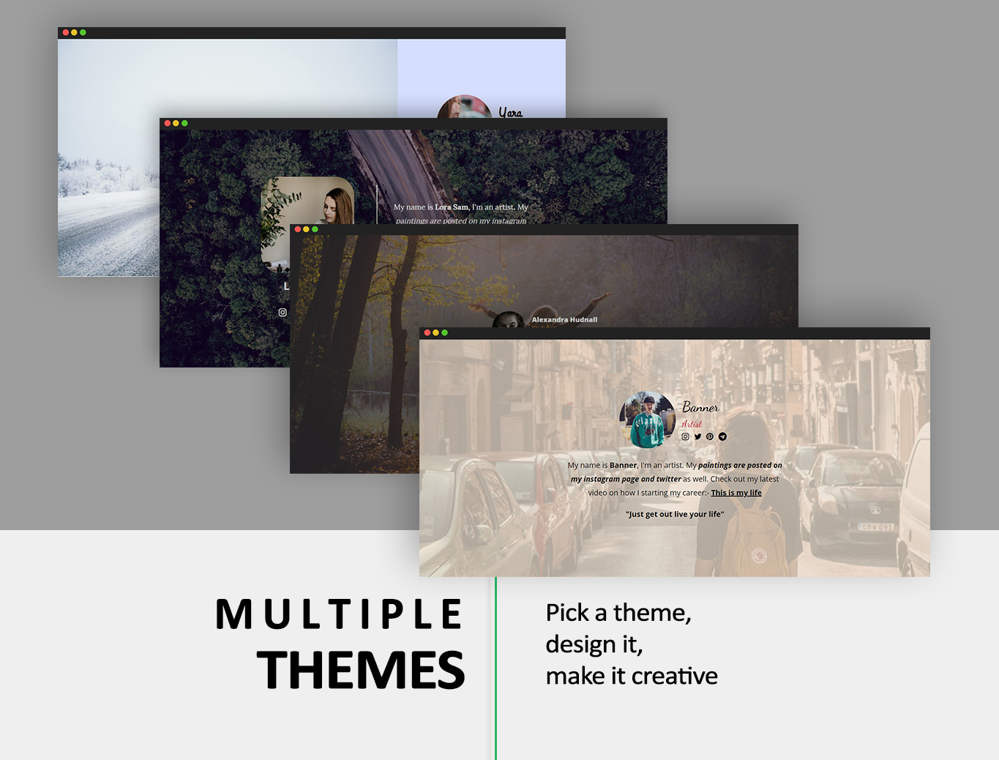

Vieww.me overview
Vieww.me is a website which helps anyone to create a onepage online profile portfolio for free. It has got tons of features like customized builder, text editor, minimal themes and a very easy-to-use dashboard.
 (Custom made theme for creators)Editor
It was very simple to upload photos by drag and drop and quite simple to editor typographies inside the webpage of your profile.
 (Vieww editor)Themes
We have made the simplest possible themes for your profile. Besides that, when the customization is applied on top, it would look more unique indeed. The cusotomization includes changing: fonts, colors and putting your essential profile information.
We created this application putting simplicity in mind; that's the reason for the very slight customization other than draging and changing aligments like any other website creators out there.
 (Themes) * This website was live and is currently inactive due to some circumstances.